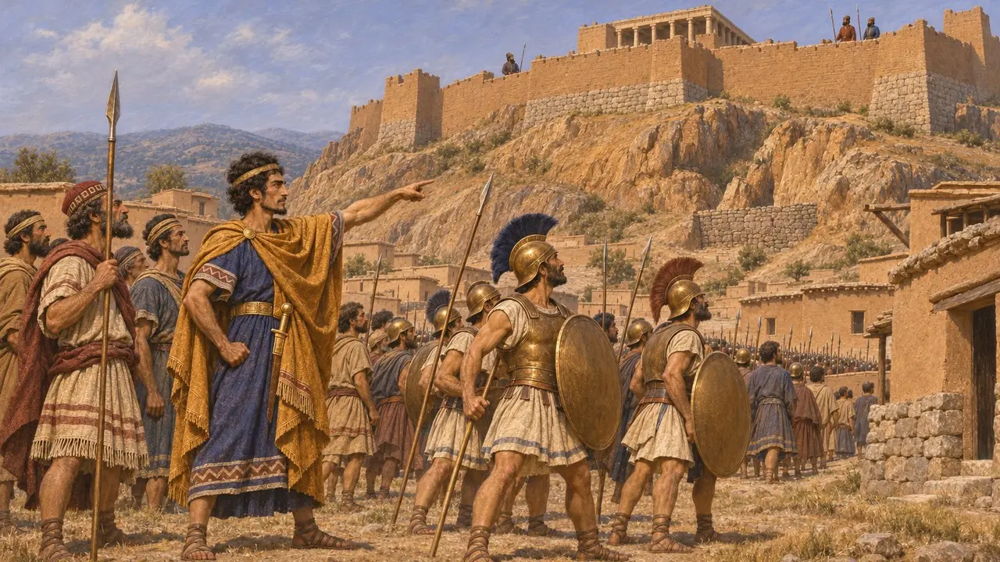

باكتيس
ليدي ثار بعد سقوط سارديس، على الأرجح نحو 546-545 ق.م
كان باكتيس ليديًا ائتمنه قورش على كنز كرويسوس بعد سقوط سارديس. وبعد أن غادر قورش نحو الشرق، استخدمه باكتيس لإشعال ثورة على الساحل الليدي. وانهار التمرد، وسلّمته المدن اليونانية من واحدة إلى أخرى. وهيرودوت هو المصدر المتصل الوحيد.
في اللعبة: لا تذكر اللعبة باكتيس إلا في مقالات الأحداث المتعلقة بسقوط سارديس وبفتح هارباغوس لأيونيا. وليست له آلية خاصة به.
حارس كنز كرويسوس
رواية قديمةيقول هيرودوت إن قورش، بعد أن استولى على سارديس، توجّه نحو إكباتانا وأخذ كرويسوس معه. وترك فارسيًا اسمه تابالوس على رأس القيادة في سارديس. أما باكتييس، وهو ليدي، فقد أُمر بأن يحمل ذهب كرويسوس وسائر كنوزه. وهكذا كان باكتييس حاملًا للكنوز، بينما كانت القيادة بيد تابالوس.
Herodotus 1.153

الثورة في سارديس
رواية قديمةيقول هيرودوت إن باكتيس، لمّا كان قورش في طريقه، أقنع الليديين بالثورة على تابالوس وعلى قورش. فنزل إلى الساحل، واستخدم الكنز في استئجار المرتزقة، وكسب أهل الساحل إلى صفّه. ثم حاصر تابالوس في قلعة سارديس.
Herodotus 1.154
جواب قورش وماظاريس
رواية قديمةيقول هيرودوت إن قورش أرسل القائد الميدي مازاريس على رأس جيش. ولما بلغ باكتييس خبر اقترابه، فرّ إلى كومي وتفرّق مرتزقته. ثم طالب مازاريس أهل كومي بتسليم باكتييس. وفي رواية هيرودوت، لا يدخل هارباغوس القصة إلا بعد أن مات مازاريس بالمرض، فواصل فتح المدن الأيونية.
Herodotus 1.156-161
سُلِّم من مدينة إلى مدينة
رواية قديمةيقول هيرودوت إن أهل كيمي استشاروا الوحي في برانخيداي، فأمرهم بتسليم باكتيس. فأرسلوه إلى ميتيليني، التي كانت مستعدة لبيعه، ثم إلى خيوس. وأخذه أهل خيوس من معبد أثينا وسلّموه، ويقول هيرودوت إنهم نالوا في مقابل ذلك أرض أتارنيوس في ميسيا. ولا يذكر هيرودوت ما آل إليه أمر باكتيس.
Herodotus 1.157-160
نصيحة كرويسوس بشأن الليديين
أسطورة لاحقةيروي هيرودوت أن قورش أراد استعباد الليديين، وأن كرويسوس ثناه عن ذلك. وفي هذه الرواية أشار كرويسوس بمنع الليديين من حمل السلاح، وإلباسهم ثياباً ناعمة، وتعليم أبنائهم العزف على الآلات الموسيقية والتجارة. وتُقرأ هذه الرواية بوصفها حكاية أخلاقية عن الترف والإمبراطورية، ولا ينبغي اعتبارها سجلاً للسياسة الفارسية.
Herodotus 1.155-156
ما تُظهره هذه الثورة
متنازع عليههيرودوت هو المصدر الوحيد لهذه الأحداث، ولا يذكر أي نص فارسي باكتيس. ويرى المؤرخون عمومًا أن هذا التمرد دليل على أن ليديا كانت مضطربة في السنوات الأولى من الحكم الفارسي. أما التواريخ الدقيقة وتفاصيل الكنز فغير مؤكدة.
P. Briant, From Cyrus to Alexander, 2002
المصادر
- Herodotus 1.153-161
- P. Briant, From Cyrus to Alexander, 2002
- M. A. Dandamaev, A Political History of the Achaemenid Empire, 1989